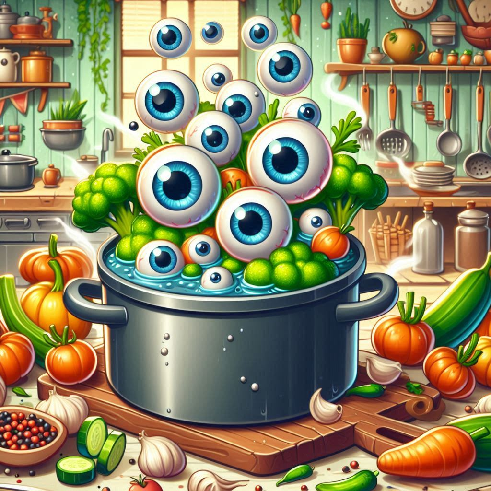

EYEBALL STEW

Description
A true delicacy from the underworld kitchens, Eyeball Stew is a thick, savory concoction that stares back with every bite. Perfect for feeding hungry ghouls, cyclopes, or necromancers after a long night of spellcasting. The stew is simmered in rich blood broth, packed with protein, fear, and the occasional twitch. Best served bubbling hot in a cauldron or cursed bowl.
Ingredients
- 👁️ 12 fresh eyeballs – plucked from consenting creatures (or peeled pearl onions for less... interactive versions)
- 🩸 3 cups coagulated blood broth – thick and iron-rich
- 🦴 1 cup bone marrow – scooped straight from cursed femurs
- 🪲 1 handful crispy beetle carapace – for crunch
- 🧅 1 diced onion – sautéed in haunted butter
- 🧄 4 cloves garlic – whispered to by banshees
- 🌿 Chopped nightshade leaves – use sparingly unless you're undead
- 🧂 Salt made from powdered siren song – just a pinch
- 🌶️ 1 tsp ghost chili oil – for a soul-burning kick
- 💀 Optional: Crushed grave dust – for that “freshly buried” flavor
GO HOME